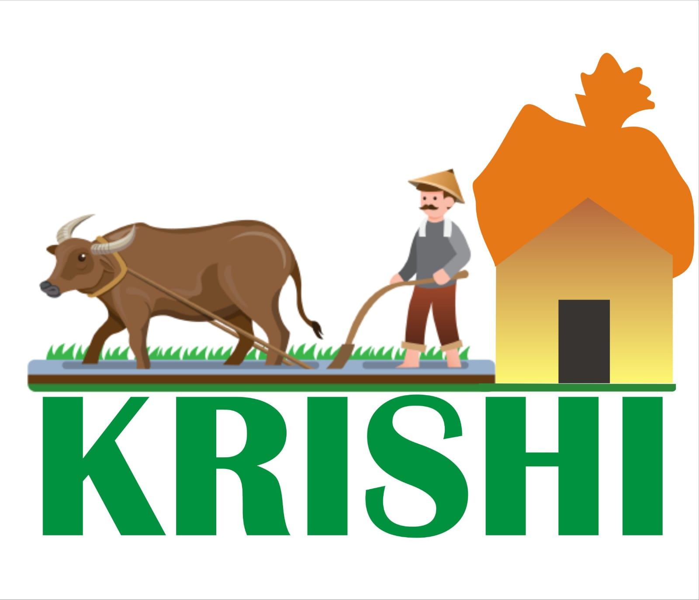

Farm Equipments
Agricultural machinery relates to the mechanical structures and devices used in farming or other agriculture. There are many types of such equipment, from hand tools and power tools to tractors and the countless kinds of farm implements that they tow or operate. Diverse arrays of equipment are used in both organic and nonorganic farming.Especially since the advent of mechanised agriculture, agricultural machinery is an indispensable part of how the world is fed. Agricultural machinery can be regarded as part of wider agricultural automation technologies, which includes the more advanced digital equipment and robotics.
Animal Veterinary
Veterinary medicine is the branch of medicine that deals with the prevention, management, diagnosis, and treatment of disease, disorder, and injury in animals. Along with this, it deals with animal rearing, husbandry, breeding, research on nutrition, and product development. The scope of veterinary medicine is wide, covering all animal species, both domesticated and wild, with a wide range of conditions that can affect different species.
Crops
A crop is a plant that can be grown and harvested extensively for profit or subsistence. When the plants of the same kind are cultivated at one place on a large scale, it is called a crop. Most crops are cultivated in agriculture or hydroponics. Crops may include macroscopic fungus (e.g. mushrooms) and marine macroalga (e.g. seaweed), some of which are grown in aquaculture. Most crops are harvested as food for humans or fodder for livestock. Some crops are gathered from the wild often in a form of intensive gathering (e.g. ginseng, yohimbe, and eucommia).
Goverment Provision
The history of agriculture in India dates back to the neolithic. India ranks second worldwide in farm outputs. As per Indian economic survey 2018, agriculture employed more than 50% of the Indian work force and contributed 17–18% to country's GDP. In 2016, agriculture and allied sectors like animal husbandry, forestry and fisheries accounted for 17.5% of the GDP (gross domestic product) with about 41.49% of the workforce in 2020. India ranks first in the world with highest net cropped area followed by US and China.